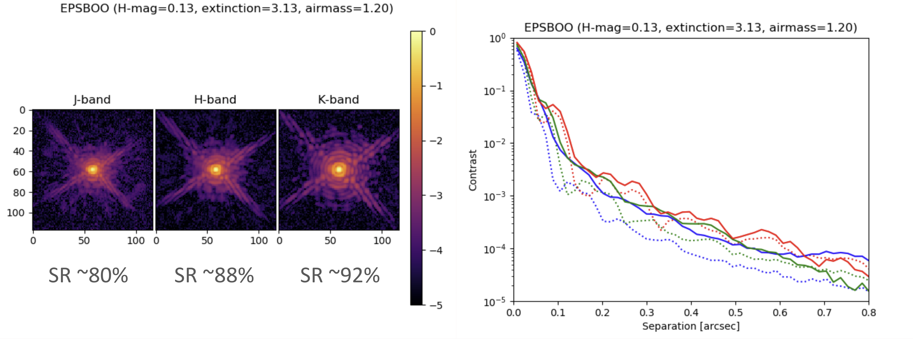

System
Performance
Observing
AO3k-NIRWFS
|
Information for S25A observersAO3k with NIR WFS is available to all observers in S25A.
The deformable mirror (DM) in Subaru Telescope's facility AO system (AO188) has been upgraded
from a 188-element bimorph mirror to a 3228-actuator magnetic mirror. All observers
using the AO system will be using the new DM.
Three modes are available to observers: AO188/NGS, AO188/LGS and AO3k/NIRWFS.
When using visible wavefront sensing (AO188/NGS and AO188/LGS), the wavefront correction
is limited to the 188 modes sensed by the WFS, so the performance is unchanged from the
previous (pre-S25A) AO system. When using the NIR WFS (AO3k/NIRWFS mode), the near-IR pyramid
wavefront sensor can control all illuminated actuators, providing high performance AO correction.
The NIR WFS is a PI-type module. Service observations are not offered with the NIR WFS. According to Subaru Telescope's rules for PI-type instruments, please contact and include the PI, Julien Lozi (lozi_at_naoj.org), if you plan on submitting a proposal. If your proposal targets the galactic center, please also contact and include co-I Shogo Nishiyama (shogo-n_at_staff.miyakyo-u.ac.jp) Before preparing the proposal, please read Planning Observations very carefully . |
Introduction
The Near Infrared Wavefront Sensor (NIR WFS) is a wavefront sensor located inside the AO188 adaptive optics system of the Subaru Telescope. It uses most of the AO188 optics, and replaces the visible curvature wavefront sensor (CWFS) to control the 3228-element magnetic deformable mirror to perform the wavefront correction. It has three modes: a Pyramid WFS mode (PyWFS), a Focal Plane WFS mode (FPWFS) and a pupil imaging mode (See Technical description for more information about the design). Only the PyWFS mode will be offered for Open-Use observations in S25A.
The open-use instruments that can currently benefit from the NIR WFS are IRCS. SCExAO, SCExAO+CHARIS, SCExAO+VAMPIRES, SCExAO+MEC and SCExAO+REACH, although not all modes are compatible.
The NIR WFS only operates in NGS mode. It requires a bright star within 10 arcsec from the science target. A target brighter than H-mag = 9 to 13 is required to obtain a reasonable correction, depending on the spectrum of the star, and the dichroic beamsplitter pickoff selected. The dichroic cannot be switched during the same night. See Planning Observations for more information.
Strehl ratios above 80% in H-band were demonstrated under good seeing conditions. (See Performance for more details).
|
 |
|
|
|---|
Modes supported in S25A
SCExAO
The NIR WFS can be used with the following SCExAO modes :- CHARIS low-red broadband
- CHARIS hi-red J, H or K-band
- VAMPIRES imaging
- MEC y and J band
- REACH (Single mode fiber injection inside SCExAO feeding IRD
IRCS
The NIR WFS can be used with the following IRCS modes :- 20 mas imaging mode with Y- , J- , H- , and K-band
- Echelle mode with zJ- , J- , H- , and K-band
Dichroics availability for each mode
| Dichroics | SCExAO/ CHARIS |
SCExAO/ VAMPIRES |
SCExAO/ MEC |
SCExAO/ REACH |
IRCS | |||||||||||
|---|---|---|---|---|---|---|---|---|---|---|---|---|---|---|---|---|
| lo-res | hi-res | imaging | spectro-imaging | spectro | imaging | echelle spectro | ||||||||||
| J+H+K | J | H | K | I | Y | Y+J | Y+J+H | Y | J | H | K | zJ | J | H | K | |
| K-band | Yes* | No | No | Yes | No | No | No | No | No | No | No | Yes | No | No | No | Yes |
| YJH50 | Yes | Yes | Yes | Yes | Yes | Yes | Yes | Yes | Yes | Yes | Yes | Yes | Yes | Yes | Yes | Yes |
| YJH90 | Yes | Yes | Yes | Yes | Yes | Yes | Yes | Yes | Yes | Yes | Yes | Yes | Yes | Yes | Yes | Yes |
| Vis-HK | Yes† | No | No | Yes | Yes | No | No | Yes‡ | No | No | Yes | Yes | No | No | Yes | Yes |
Basic parameters
| Location | Nasmyth focus (IR) |
| Spectral coverage of science path | 0.6-2.4 um |
| Number of control elements | 3228 (device), ~2700 (illuminated), ~2000 modes controlled |
| Deformable mirror | Magnetic actuation, model ALPAO3228 |
| High-order WFS | NIR Pyramid Wavefront sensor with HgCdTe detector. |
| Control bandwidth | > 100 Hz, 500 to 2000 corrections/sec |
| NGS magnitude | -3 < H < 9-13 (Depending on the selected dichroic) |
| Off-axis steering | 20 arcsec diameter |
| Wavelength range | 0.95-1.8 um (y, J and H-band) |
Technical Description
Performance
Planning Observations
Instrument citation
Please cite the following paper when you refer to the NIR WFS in your publication.
- "AO3000 at Subaru: Combining for the first time a NIR WFS using First Light's C-RED ONE and ALPAO's 64x64 DM"
- Lozi et al. 2022, Proc. SPIE, vol. 12185, id. 1218533
Contacts
Questions regarding this page should be directed to the primary support astronomer (Julien Lozi, lozi_at_naoj.org).
Please note that all numbers on these pages are subject to change as the performance of the NIR WFS is better determined.